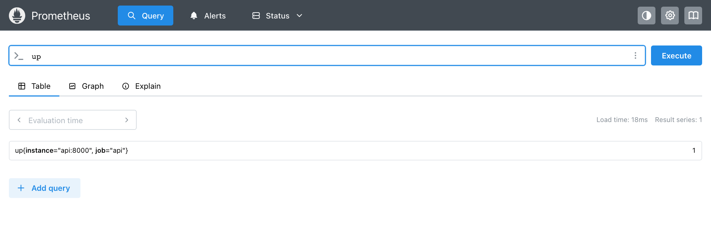
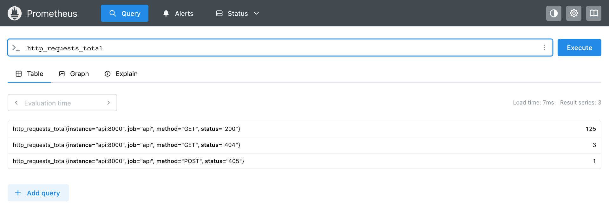

Модуль 2 · как работает prometheus · сбор метрик
Глава 2.6
Первый запуск:
Prometheus и FastAPI
Практическая глава модуля. В ней запускается весь путь из главы 2.1. Приложение на FastAPI считает одну метрику. Prometheus забирает её раз в 15 секунд. В конце выполняется первый запрос к сохранённым данным. Каждый файл стенда разобран по строкам, каждая команда показана вместе с выводом.
- Категория
- Практика
- Уровень
- Начальный
- Нужно
- Docker Desktop или Docker Engine с Compose v2; браузер
- Результат
- Target UP, запросы
upиhttp_requests_total
§1Состав стенда
Пять глав модуля описывали путь числа по частям. В этой главе весь путь запускается на вашем компьютере. Стенд — папка prometheus-start из архива модуля. В ней приложение, настройки Prometheus и файлы для Docker. Python на компьютере для основного варианта не нужен.
↓ Скачать prometheus-start.zip
В браузере: приложение — localhost:8020, Prometheus — localhost:9092.
Приложение FastAPI, порт 8000. Считает запросы и отдаёт страницу /metrics.
Prometheus 3.5.0, порт 9090. Раз в 15 секунд запрашивает http://api:8000/metrics.
Человек обращается к обоим контейнерам с компьютера через порты 8020 и 9092. Prometheus обращается к приложению внутри сети по имени api (глава 2.2, §4).
Человек обращается к обоим контейнерам с компьютера, а Prometheus обращается к приложению внутри сети по имени api. Почему адреса разные, объясняла глава 2.2. Теперь по порядку: какие файлы лежат в папке и по каким адресам открывается стенд.
Файлы стенда
Три файла в дереве выделены: в них находится всё, что относится к метрикам. Остальные нужны для сборки образа и для опытов.
Адреса стенда
| Адрес на компьютере | Что открывается |
|---|---|
http://localhost:8020/ | Приложение: JSON с названием сервиса |
http://localhost:8020/metrics | Страница /metrics — тот же текст, который получает Prometheus |
http://localhost:9092/ | Веб-интерфейс Prometheus |
Номера 8020 и 9092 выбраны потому, что порты 8000 и 9090 часто заняты другими программами и стендом модуля 1. Оба порта открыты только на адресе 127.0.0.1, поэтому с других компьютеров сети стенд недоступен.
Из трёх выделенных файлов первым разобрано приложение: в нём числа появляются.
§2Приложение app.py
Приложение стенда делает две вещи: отдаёт товар по номеру и считает собственные запросы. Счёт ведётся в одном месте, через которое проходят все запросы, и сначала показано, как это место устроено.
Каждый посетитель проходит через турникет. Турникет считает проходы. На то, куда посетитель идёт дальше, он не влияет.
Каждый запрос проходит через одну общую функцию. Она увеличивает счётчик и не меняет ответ приложения. Такая функция называется middleware — промежуточный обработчик.
GET, 200 увеличен на 1.Счётчик увеличивается после шага 3: код ответа становится известен после того, как обработчик закончил работу.
Счётчик увеличивается на четвёртом шаге, потому что код ответа становится известен только после работы обработчика. Ниже код, в котором эти четыре шага записаны.
Код приложения
Ниже — рабочая часть файла. В полном файле есть ещё три адреса для опыта с ошибками из главы 2.4: /metrics/slow, /metrics/broken, /metrics/html. Рабочая конфигурация к ним не обращается.
from fastapi import FastAPI, Request from fastapi.responses import PlainTextResponse, Response from prometheus_client import ( CONTENT_TYPE_LATEST, CollectorRegistry, Counter, disable_created_metrics, generate_latest, ) disable_created_metrics() registry = CollectorRegistry() HTTP_REQUESTS = Counter( "http_requests_total", "Total HTTP requests", ["method", "status"], registry=registry, ) SERVICE_PATHS = {"/metrics", "/metrics/slow", "/metrics/broken", "/metrics/html"} app = FastAPI(title="Prometheus start") @app.middleware("http") async def count_requests(request: Request, call_next): response = await call_next(request) if request.url.path not in SERVICE_PATHS: HTTP_REQUESTS.labels(request.method, str(response.status_code)).inc() return response @app.get("/items/{item_id}") async def get_item(item_id: int): if item_id > 100: return PlainTextResponse("not found", status_code=404) return {"item_id": item_id} @app.get("/metrics") async def metrics(): return Response(generate_latest(registry), media_type=CONTENT_TYPE_LATEST)
В таблице каждая существенная строка разобрана дважды: что она делает и что изменится в ответе /metrics, если её убрать.
Разбор по строкам
| Строка | Что делает | Если убрать или изменить |
|---|---|---|
disable_created_metrics() | Отключает дополнительные ряды _created | В ответе у каждого ряда счётчика появится второй ряд (глава 2.3, §5) |
registry = CollectorRegistry() | Создаёт отдельный реестр — список метрик приложения | С общим реестром библиотеки в ответе появятся метрики Python: python_gc_*, python_info, в Linux ещё process_* |
Counter("http_requests_total", …) | Создаёт счётчик с описанием «Total HTTP requests» и метками method, status | Если добавить метку с большим числом значений, например путь с номером товара, рядов станет столько, сколько товаров (глава 2.1, §4) |
@app.middleware("http") | Объявляет функцию, через которую проходит каждый запрос | Счётчик придётся увеличивать в каждом обработчике вручную |
if … not in SERVICE_PATHS | Не считает запросы Prometheus к /metrics | Счётчик GET 200 будет расти на 4 в минуту без единого пользователя: Prometheus опрашивает приложение 4 раза в минуту |
str(response.status_code) | Превращает код ответа в текст: значение метки — текст | labels() превращает число в текст и без этого. Функция str записана, чтобы преобразование было видно в коде |
generate_latest(registry) | Записывает все метрики реестра в виде текста | — |
media_type=CONTENT_TYPE_LATEST | Задаёт заголовок text/plain; version=1.0.0; charset=utf-8 | Без media_type в ответе не будет заголовка Content-Type, и Prometheus 3 отклонит ответ (глава 2.3, §6) |
Python в этой строке: @app.middleware("http") и await call_next(request)
Декоратор @app.middleware("http") сообщает FastAPI, что функцию нужно вызывать для каждого запроса. FastAPI передаёт в неё call_next — функцию, которая запускает обычный обработчик адреса.
Код до строки await call_next(request) выполняется раньше обработчика. Код после неё выполняется, когда ответ готов. Счётчик увеличивается после этой строки, потому что только там доступен response.status_code.
Python в этой строке: HTTP_REQUESTS.labels("GET", "200").inc()
labels() возвращает счётчик для одного сочетания меток. При первом вызове с новым сочетанием он этот счётчик создаёт. inc() увеличивает счётчик на 1, inc(5) — на 5. Уменьшить counter нельзя: библиотека сообщит об ошибке.
>>> from prometheus_client import Counter, CollectorRegistry, generate_latest
>>> r = CollectorRegistry()
>>> c = Counter("demo_total", "Demo", ["method"], registry=r)
>>> c.labels("GET").inc(); c.labels("GET").inc()
>>> print(generate_latest(r).decode())
# HELP demo_total Demo
# TYPE demo_total counter
demo_total{method="GET"} 2.0
# HELP demo_created Demo
# TYPE demo_created gauge
demo_created{method="GET"} 1.790692138359471e+09
>>> c.labels("GET").inc(-1)
Traceback (most recent call last):
...
ValueError: Counters can only be incremented by non-negative amounts.Приложение считает числа и отдаёт их по запросу. Теперь нужен тот, кто будет запрашивать, и это описывают два файла настроек.
§3Конфигурация и Compose
На стенде два файла настроек. Файл prometheus.yml разобран в главе 2.2: одно задание api, target api:8000, интервал 15 секунд, timeout 10 секунд.
Файл compose.yaml описывает, какие контейнеры запустить. Docker Compose — программа, которая запускает несколько контейнеров одной командой и объединяет их в сеть.
name: prometheus-start services: api: build: . ports: ['127.0.0.1:8020:8000'] prometheus: image: prom/prometheus:v3.5.0 command: - --config.file=/etc/prometheus/${PROM_CONFIG:-prometheus.yml} - --storage.tsdb.path=/prometheus - --web.enable-lifecycle ports: ['127.0.0.1:9092:9090'] volumes: - ./prometheus.yml:/etc/prometheus/prometheus.yml:ro - ./prometheus-errors.yml:/etc/prometheus/prometheus-errors.yml:ro - prometheus-data:/prometheus depends_on: [api] volumes: prometheus-data:
| Строка | Смысл |
|---|---|
build: . | Образ приложения собирается из Dockerfile в этой папке |
127.0.0.1:8020:8000 | Порт 8000 контейнера открыт на компьютере как localhost:8020. Prometheus этим портом не пользуется. Он обращается к api:8000 внутри сети |
prom/prometheus:v3.5.0 | Официальный образ Prometheus версии 3.5.0. Версия указана точно, чтобы результат не изменился после выхода новых версий |
--config.file=…${PROM_CONFIG:-prometheus.yml} | Какой файл настроек читать. По умолчанию это prometheus.yml. Переменная PROM_CONFIG подставляет файл опыта из главы 2.4 |
--storage.tsdb.path=/prometheus | Папка базы TSDB внутри контейнера |
--web.enable-lifecycle | Разрешает запрос POST /-/reload. По нему Prometheus заново читает настройки без перезапуска |
./prometheus.yml:…:ro | Файл с компьютера виден в контейнере. Буквы ro означают «только для чтения». Чтобы изменить настройки, файл правят на компьютере и выполняют reload |
prometheus-data:/prometheus | Том — хранилище Docker вне контейнера. Данные Prometheus сохраняются при пересоздании контейнера. Их удаляет команда docker compose down -v |
Все три выделенных файла разобраны. Остальное делается командами.
§4Запуск
Файлы разобраны, и стенд можно запускать. Запуск состоит из пяти шагов: запустить контейнеры, проверить их, отправить запросы к приложению, открыть страницу /metrics и открыть Prometheus. Команды выполняются в папке prometheus-start. Переключатель системы вверху страницы показывает команды для вашей операционной системы. В macOS и Linux команды одинаковые.
- Собрать образ приложения и запустить оба контейнера. При первом запуске Docker скачивает образы Python и Prometheus. Это занимает от одной до нескольких минут.
Терминалпапка prometheus-start docker compose up -d --build
- Проверить, что контейнеры работают.
docker compose psвывод на стенде, колонки сокращены NAME IMAGE STATUS PORTS prometheus-start-api-1 prometheus-start-api Up 17 seconds 127.0.0.1:8020->8000/tcp prometheus-start-prometheus-1 prom/prometheus:v3.5.0 Up About an hour 127.0.0.1:9092->9090/tcp
- Отправить запросы к приложению. До первого запроса у счётчика нет ни одного ряда (глава 2.3, §5). Команды отправляют 20 запросов к товарам и один запрос к несуществующему товару.
macOS, Linuxbash, zsh for i in $(seq 1 20); do curl -s -o /dev/null http://localhost:8020/items/$i; done curl -s -o /dev/null http://localhost:8020/items/500
WindowsPowerShell 1..20 | ForEach-Object { Invoke-WebRequest -UseBasicParsing "http://localhost:8020/items/$_" | Out-Null } curl.exe -s -o NUL http://localhost:8020/items/500 - Посмотреть страницу /metrics. В Windows пишут
curl.exe: в PowerShell словоcurlобозначает другую команду.curl http://localhost:8020/metricsпосле 20 запросов и одного 404 # HELP http_requests_total Total HTTP requests # TYPE http_requests_total counter http_requests_total{method="GET",status="200"} 20.0 http_requests_total{method="GET",status="404"} 1.0 - Открыть Prometheus:
http://localhost:9092, меню Status → Target health.
В Prometheus 2 страница называлась Status → Targets. В Prometheus 3 она называется Status → Target health. Адрес страницы прежний: /targets. В инструкциях в интернете часто встречается старое название.
Пятый шаг открывает страницу, по которой проверяют результат запуска. Она разобрана в следующем разделе.
§5Status → Target health
На этой странице Prometheus показывает все target и результат последнего scrape каждого. Ниже — страница стенда и разбор её элементов.

| Элемент страницы | Значение на снимке | Что означает |
|---|---|---|
| Заголовок блока | api | Название задания job_name |
| Счётчик справа | 1 / 1 up | Доступен один target из одного |
| Endpoint | http://api:8000/metrics | Полный адрес запроса (глава 2.2, §2). В браузере на компьютере эта ссылка не откроется: имя api известно только внутри сети Compose |
| Labels | instance="api:8000", job="api" | Метки, которые получит каждое число этого target. Стрелка раскрывает служебные метки |
| Last scrape | 4.335s ago, 4ms | Последний scrape начался 4,3 секунды назад и длился 4 миллисекунды |
| State | UP | Последний scrape успешный, up = 1. При ошибке здесь стоит DOWN и красный блок с текстом ошибки |
В колонке State бывает три значения. Сразу после запуска там стоит UNKNOWN: target уже в списке, но первого scrape ещё не было, и ждать его приходится до 15 секунд. После успешного scrape состояние становится UP, и ряд up равен 1. После неуспешного — DOWN: ряд up равен 0, а рядом записан текст ошибки.
Target в состоянии UP означает, что числа попадают в базу. Следующий шаг — получить их оттуда запросом.
§6Первые запросы
Запросы пишут на вкладке Query. В этой главе достаточно одного вида запроса — имени метрики. Такой запрос возвращает все ряды с этим именем.
Результат показывается двумя способами. Вкладка Table показывает последнее значение каждого ряда. Вкладка Graph показывает, как значения менялись.

up: один target, значение 1
http_requests_total: к меткам приложения добавлены instance и jobПять запросов для начала
| Запрос | Что показывает |
|---|---|
up | Доступность всех target: 1 или 0 |
http_requests_total | Все ряды счётчика запросов |
http_requests_total{status="404"} | Только ряды с меткой status="404". В фигурных скобках записывают условие отбора по меткам |
scrape_duration_seconds | Сколько длился последний scrape каждого target |
up[2m] | Все значения up за 2 минуты вместе с временем. Работает только на вкладке Table |
Почему число обновляется не сразу
Prometheus показывает значения последнего scrape. Если отправить 10 запросов и сразу нажать Execute, число может остаться прежним. Новое значение появится после следующего scrape, не позже чем через 15 секунд.
Пока всё работало без сбоев. Следующий опыт показывает, что видно в Prometheus, когда приложение останавливается.
§7Остановка приложения
Опыт повторяет главу 2.4, §8 на вашем компьютере. В нём приложение останавливается и запускается снова, а Prometheus продолжает работать.
- Остановить приложение:
docker compose stop api. - Через 15–30 секунд обновить страницу Target health. Состояние стало
DOWN, под target записан текст ошибки. На стенде в Docker Desktop это был текстEOF, затемcontext deadline exceeded. В другом окружении текст может отличаться. - На вкладке Query выполнить запрос
up: значение 0. Затем запросhttp_requests_total: пустой результат. - Запустить приложение:
docker compose start api. После следующего scrape состояние станетUP. Запросhttp_requests_totalвозвращает пустой результат до первого запроса к приложению: счётчик после запуска начинается заново. - На вкладке Graph выполнить запрос
upза 5 минут. На графике значение опускается до 0 на время остановки.
Опыт подтверждает четыре наблюдения из главы 2.4: ряд up записывается и во время остановки, ряд приложения прерывается сразу, а счётчик после запуска начинается заново.
Остановка была намеренной. Следующий раздел помогает, когда target не работает без видимой причины.
§8Если target не UP
В таблице собраны восемь частых случаев. Для каждого указано, что видно на экране, в чём причина и что сделать.
| Что видно | Причина | Что сделать |
|---|---|---|
Страница localhost:9092 не открывается | Контейнер Prometheus не запущен или остановился | Выполнить docker compose ps, затем docker compose logs prometheus. Ошибка в настройках записана в конце вывода |
Target UNKNOWN | Первый scrape ещё не прошёл | Подождать до 15 секунд |
connection refused для localhost:… | В targets записан localhost, а Prometheus работает в контейнере | Записать api:8000 (глава 2.2, §4) |
404 Not Found | Неверный путь | Проверить metrics_path и путь в app.py |
unsupported Content-Type | В коде страницы /metrics не указан media_type | Вернуть media_type=CONTENT_TYPE_LATEST |
UP, но запрос http_requests_total пустой | К приложению ещё не было запросов, или следующий scrape ещё не прошёл | Отправить запросы (§4, шаг 3), подождать 15 с |
| Порт 8020 или 9092 занят | Другая программа на компьютере | Изменить левое число в строке ports файла compose.yaml, например 127.0.0.1:8021:8000. Правое число не менять |
Изменения в prometheus.yml не видны | Prometheus читает настройки только при запуске | curl -X POST http://localhost:9092/-/reload или docker compose restart prometheus |
Проверка файла настроек
Файл настроек проверяет программа promtool. Она входит в образ Prometheus. Проверку выполняют до перезагрузки настроек.
$ docker compose exec prometheus promtool check config /etc/prometheus/prometheus.yml Checking /etc/prometheus/prometheus.yml SUCCESS: /etc/prometheus/prometheus.yml is valid prometheus config file syntax
Все случаи выше относятся к запуску в Docker. Если Docker недоступен, стенд запускается иначе.
§9Вариант без Docker
Когда Docker недоступен, приложение и Prometheus запускают как обычные программы. Вариант проверен в macOS с архивом prometheus-3.5.0.darwin-arm64: target localhost:8020 получил состояние UP.
- Скачать архив Prometheus 3.5.0 для своей системы со страницы prometheus.io/download и распаковать. В архиве — программы
prometheusиpromtool. - В папке стенда создать окружение Python и установить зависимости:
python -m venv .venv, затем.venv/bin/pip install -r requirements.txt(в Windows —.venv\Scripts\pip). - Запустить приложение:
.venv/bin/uvicorn app:app --port 8020. - Во втором окне терминала запустить Prometheus с файлом настроек стенда:
./prometheus --config.file=prometheus-local.yml. Веб-интерфейс откроется по адресуhttp://localhost:9090. Данные сохраняются в папкеdataрядом с программой.
В файле prometheus-local.yml записан target localhost:8020. Обе программы работают на одном компьютере, и localhost у них общий.
Стенд запущен одним из двух способов. Осталось проверить результат и поработать с ним самостоятельно.
§10Задания и проверка
Сначала проверьте результат запуска по четырём признакам.
Готово, если
api: 1 / 1 up, состояние UP.instance="api:8000", job="api".http_requests_total возвращает не меньше двух рядов, значения совпадают с /metrics.up = 0 и состояние DOWN; после запуска — снова UP.Задания
В каждом задании меняется одна настройка. Результат проверяется в веб-интерфейсе Prometheus.
- Интервал. Установите в
prometheus.ymlscrape_interval: 5s, перезагрузите конфигурацию и выполнитеup[1m]. Сколько значений стало за минуту и какойscrape_timeoutпоказывает страница Status → Configuration? - Метка target. Добавьте target метку
env: dev(глава 2.2, §5). На каких рядах она появилась? - Ошибка пути. Добавьте в задание
metrics_path: /stats. Запишите текст ошибки и найдите, что изменилось в ответе/metricsприложения через минуту. - Вторая метрика. Добавьте в
app.pygaugeitems_in_progress, который увеличивается в начале обработки/items/{id}и уменьшается в конце. Пересоберите образ (docker compose up -d --build) и найдите метрику в Query.
Итоговый стенд
В архиве prometheus-final собран готовый результат главы: все задания выполнены, для каждого опыта есть свой файл настроек. Стенд запускается теми же командами, что и основной.
↓ Скачать prometheus-final.zip
Порядок работы с итоговым стендом записан в файле PROHOD.md. Первые четыре шага повторяют запуск из этой главы. На пятом шаге проверяется вторая метрика: пять долгих запросов поднимают значение gauge до 5, затем оно возвращается к 0. Шестой шаг — остановка приложения. Шаги с седьмого по девятый — опыты с настройками: интервал 5 секунд, неверный путь и шесть заданий с ошибками. Основной и итоговый стенды занимают порты 8020 и 9092, поэтому перед запуском одного остановите другой командой docker compose down.
Шпаргалка
docker compose up -d --build
docker compose ps
docker compose stop api
docker compose start api
docker compose downdown -v удаляет также данные Prometheus.
promtool check config prometheus.yml
curl -X POST localhost:9092/-/reloadДля reload нужен флаг --web.enable-lifecycle.
localhost:8020/metrics
localhost:9092/targets
localhost:9092/queryВнутри сети Compose приложение — api:8000.
up
http_requests_total
http_requests_total{status="404"}
scrape_duration_secondsЗначения обновляются раз в scrape_interval.
Проверьте себя
Вопрос 1Ссылка http://api:8000/metrics в колонке Endpoint не открывается в браузере. Что это значит?
UP означает, что Prometheus получил метрики. Он обращается к приложению изнутри сети Compose.
Верно. Адрес target записан для сети, в которой работает Prometheus. Браузер работает на компьютере.
Этот флаг разрешает перезагрузку настроек. На адреса target он не влияет.
Вопрос 2Отправили 10 запросов и сразу выполнили http_requests_total. Значение не изменилось. Почему?
Верно. Prometheus показывает значения последнего scrape. Новое значение появится не позже чем через
scrape_interval.Счётчик увеличивается сразу после ответа. Страница
/metricsпоказывает новое значение без задержки.Не считаются только запросы к адресам
/metrics….
- Prometheus. Getting started — prometheus.io/docs/prometheus/latest/getting_started
- Prometheus. Installation: using Docker — prometheus.io/docs/prometheus/latest/installation
- prometheus-client для Python: FastAPI и ASGI — prometheus.github.io/client_python
- FastAPI. Middleware — fastapi.tiangolo.com/tutorial/middleware
- Стенд модуля: Docker Desktop, Prometheus 3.5.0, образ python:3.12-slim; все выводы получены 29.09.2026